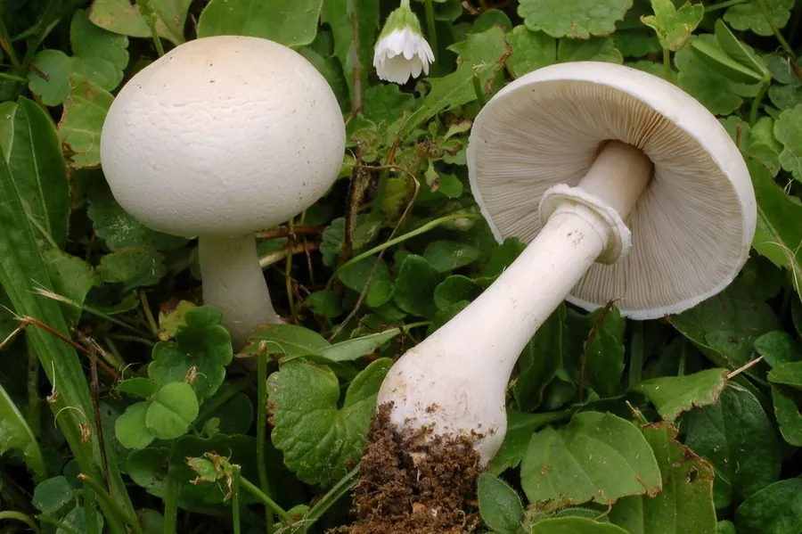

真菌 · 真菌界
白环柄菇 Leucoagaricus leucothites

白环柄菇通体洁白、菌盖光滑，有白色菌环但基部无菌托，可食却极易与致命鹅膏混淆，不建议初学者采食。
- 分类
- 门担子菌门纲伞菌纲目伞菌目科蘑菇科属白环柄菇属
- 栖息环境
- 草地、花园、公园与路旁，夏秋季出菇
- 地理分布
- 温带地区分布，中国各地草地与花园有记录
- 保护级别
- 暂无评估（IUCN 未评估，中国未列入重点保护名录）
物种志
白环柄菇是担子菌门蘑菇科的真菌，子实体单生或群生。菌盖初期半球形，后平展，直径 5–12 cm，表面白色、乳白色至淡灰白色，光滑，中央有时略带淡褐色，边缘整齐；菌肉白色，较厚，受伤后不变色或略变黄。菌褶离生、密集，白色至乳白色。菌柄白色，长 5–10 cm，圆柱形，基部稍膨大但没有菌托，中上部有白色膜质菌环。孢子印白色至淡粉白色。
白环柄菇生于草地、花园、公园和路旁，夏秋季出菇，在温带地区分布，中国各地有记录。它肉质较厚、味道清淡，理论上是可食的，但风险很高：通体白色、有菌环的特征与致命的白毒伞、鳞柄白鹅膏非常相似，而后者基部有菌托、菌褶也是白色，误认后果极其严重。因此不建议初学者采食白环柄菇；如果一定要采，必须仔细检查基部是否有菌托，并请有经验的人确认。
形态与习性
- 菌盖直径 5–12 cm，白色至乳白色
- 菌褶白色至乳白色，离生密集
- 菌柄白色，长 5–10 cm
- 菌环白色膜质，位于菌柄中上部
- 菌托无，是与鹅膏菌的关键区别
- 孢子印白色至淡粉白色
- 食用性理论可食，但误认风险极高
趣味知识
- 白环柄菇通体雪白，很容易被误认成致命的白毒伞。
- 关键区别在基部：白环柄菇没有菌托，鹅膏菌有袋状菌托。
- 它的孢子印是白色到淡粉白色，鹅膏菌也是白色。
- 初学者最好不要采食这种“长得像毒菌”的白蘑菇。